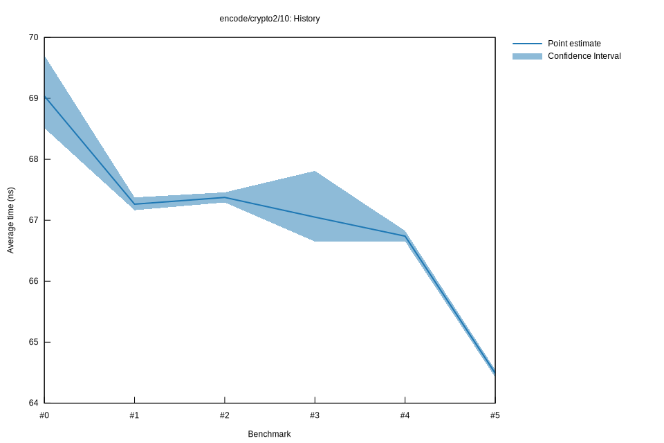

# 52022-10-16T20:01:27+03:00
|
Lower Bound |
Estimate |
Upper Bound |
| Value: |
64.42ns |
64.49ns |
64.55ns |
| Throughput: |
177.64MiB/s |
177.46MiB/s |
177.30MiB/s |
| Change in Value: |
-3.4788% |
-3.2554% |
-3.0106% |
| Change in Throughput: |
+3.6042% |
+3.3649% |
+3.1041% |
No change in performance detected.
# 42022-10-16T17:21:41+03:00
|
Lower Bound |
Estimate |
Upper Bound |
| Value: |
66.65ns |
66.74ns |
66.83ns |
| Throughput: |
171.70MiB/s |
171.47MiB/s |
171.25MiB/s |
| Change in Value: |
-0.7213% |
-0.2480% |
+0.1136% |
| Change in Throughput: |
+0.7266% |
+0.2486% |
-0.1135% |
Change within noise threshold.
# 32022-10-15T17:13:36+03:00
|
Lower Bound |
Estimate |
Upper Bound |
| Value: |
66.65ns |
67.05ns |
67.81ns |
| Throughput: |
171.70MiB/s |
170.68MiB/s |
168.77MiB/s |
| Change in Value: |
-1.1092% |
-0.7629% |
-0.3306% |
| Change in Throughput: |
+1.1216% |
+0.7688% |
+0.3317% |
No change in performance detected.
# 22022-10-15T16:48:59+03:00
|
Lower Bound |
Estimate |
Upper Bound |
| Value: |
67.29ns |
67.37ns |
67.46ns |
| Throughput: |
170.07MiB/s |
169.86MiB/s |
169.65MiB/s |
| Change in Value: |
-0.1146% |
+0.1259% |
+0.3541% |
| Change in Throughput: |
+0.1148% |
-0.1258% |
-0.3528% |
Change within noise threshold.
# 12022-10-08T17:25:45+03:00
|
Lower Bound |
Estimate |
Upper Bound |
| Value: |
67.16ns |
67.26ns |
67.37ns |
| Throughput: |
170.39MiB/s |
170.14MiB/s |
169.86MiB/s |
| Change in Value: |
-7.3515% |
-4.9642% |
-2.9266% |
| Change in Throughput: |
+7.9348% |
+5.2235% |
+3.0148% |
No change in performance detected.
# 02022-10-08T17:06:44+03:00
|
Lower Bound |
Estimate |
Upper Bound |
| Value: |
68.51ns |
69.04ns |
69.70ns |
| Throughput: |
167.04MiB/s |
165.77MiB/s |
164.18MiB/s |